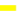

<!doctype html>
<html lang="en">
    <head>
        <meta charset="utf-8">
        <meta http-equiv="X-UA-Compatible" content="IE=edge">
        <meta name="viewport" content="initial-scale=1,user-scalable=no,maximum-scale=1,width=device-width">
        <meta name="mobile-web-app-capable" content="yes">
        <meta name="apple-mobile-web-app-capable" content="yes">
        <link rel="stylesheet" href="css/leaflet.css"><link rel="stylesheet" href="css/L.Control.Locate.min.css">
        <link rel="stylesheet" href="css/qgis2web.css"><link rel="stylesheet" href="css/fontawesome-all.min.css">
        <link rel="stylesheet" href="css/leaflet-measure.css">
        <style>
        html, body, #map {
            width: 100%;
            height: 100%;
            padding: 0;
            margin: 0;
        }
        </style>
        <title></title>
    </head>
    <body>
        <div id="map">
        </div>
        <script src="js/qgis2web_expressions.js"></script>
        <script src="js/leaflet.js"></script><script src="js/L.Control.Locate.min.js"></script>
        <script src="js/leaflet.rotatedMarker.js"></script>
        <script src="js/leaflet.pattern.js"></script>
        <script src="js/leaflet-hash.js"></script>
        <script src="js/Autolinker.min.js"></script>
        <script src="js/rbush.min.js"></script>
        <script src="js/labelgun.min.js"></script>
        <script src="js/labels.js"></script>
        <script src="js/leaflet-measure.js"></script>
        <script src="data/Veredas_CAT_ajustado_1.js"></script>
        <script src="data/PROPIEDADES_2.js"></script>
        <script src="data/Placa_huella_3.js"></script>
        <script>
        var map = L.map('map', {
            zoomControl:true, maxZoom:28, minZoom:1
        }).fitBounds([[5.167739264676777,-73.70524637961348],[5.293641253075259,-73.49110894810617]]);
        var hash = new L.Hash(map);
        map.attributionControl.setPrefix('<a href="https://github.com/tomchadwin/qgis2web" target="_blank">qgis2web</a> &middot; <a href="https://leafletjs.com" title="A JS library for interactive maps">Leaflet</a> &middot; <a href="https://qgis.org">QGIS</a>');
        var autolinker = new Autolinker({truncate: {length: 30, location: 'smart'}});
        function removeEmptyRowsFromPopupContent(content, feature) {
         var tempDiv = document.createElement('div');
         tempDiv.innerHTML = content;
         var rows = tempDiv.querySelectorAll('tr');
         for (var i = 0; i < rows.length; i++) {
             var td = rows[i].querySelector('td.visible-with-data');
             var key = td ? td.id : '';
             if (td && td.classList.contains('visible-with-data') && feature.properties[key] == null) {
                 rows[i].parentNode.removeChild(rows[i]);
             }
         }
         return tempDiv.innerHTML;
        }
        document.querySelector(".leaflet-popup-pane").addEventListener("load", function(event) {
          var tagName = event.target.tagName,
            popup = map._popup;
          // Also check if flag is already set.
          if (tagName === "IMG" && popup && !popup._updated) {
            popup._updated = true; // Set flag to prevent looping.
            popup.update();
          }
        }, true);
        L.control.locate({locateOptions: {maxZoom: 19}}).addTo(map);
        var measureControl = new L.Control.Measure({
            position: 'topleft',
            primaryLengthUnit: 'meters',
            secondaryLengthUnit: 'kilometers',
            primaryAreaUnit: 'sqmeters',
            secondaryAreaUnit: 'hectares'
        });
        measureControl.addTo(map);
        document.getElementsByClassName('leaflet-control-measure-toggle')[0]
        .innerHTML = '';
        document.getElementsByClassName('leaflet-control-measure-toggle')[0]
        .className += ' fas fa-ruler';
        var bounds_group = new L.featureGroup([]);
        function setBounds() {
        }
        map.createPane('pane_GoogleSatellite_0');
        map.getPane('pane_GoogleSatellite_0').style.zIndex = 400;
        var layer_GoogleSatellite_0 = L.tileLayer('https://mt1.google.com/vt/lyrs=s&x={x}&y={y}&z={z}', {
            pane: 'pane_GoogleSatellite_0',
            opacity: 1.0,
            attribution: '<a href="https://www.google.at/permissions/geoguidelines/attr-guide.html">Map data ©2015 Google</a>',
            minZoom: 1,
            maxZoom: 28,
            minNativeZoom: 0,
            maxNativeZoom: 20
        });
        layer_GoogleSatellite_0;
        map.addLayer(layer_GoogleSatellite_0);
        function pop_Veredas_CAT_ajustado_1(feature, layer) {
            var popupContent = '<table>\
                    <tr>\
                        <td colspan="2"><strong>NOMBRE</strong><br />' + (feature.properties['NOMBRE'] !== null ? autolinker.link(feature.properties['NOMBRE'].toLocaleString()) : '') + '</td>\
                    </tr>\
                    <tr>\
                        <td colspan="2"><strong>Población</strong><br />' + (feature.properties['Población'] !== null ? autolinker.link(feature.properties['Población'].toLocaleString()) : '') + '</td>\
                    </tr>\
                    <tr>\
                        <td colspan="2"><strong>Hombres</strong><br />' + (feature.properties['Hombres'] !== null ? autolinker.link(feature.properties['Hombres'].toLocaleString()) : '') + '</td>\
                    </tr>\
                    <tr>\
                        <td colspan="2"><strong>Mujeres</strong><br />' + (feature.properties['Mujeres'] !== null ? autolinker.link(feature.properties['Mujeres'].toLocaleString()) : '') + '</td>\
                    </tr>\
                    <tr>\
                        <td colspan="2"><strong>N_Hogares</strong><br />' + (feature.properties['N_Hogares'] !== null ? autolinker.link(feature.properties['N_Hogares'].toLocaleString()) : '') + '</td>\
                    </tr>\
                    <tr>\
                        <td colspan="2"><strong>N_Vivienda</strong><br />' + (feature.properties['N_Vivienda'] !== null ? autolinker.link(feature.properties['N_Vivienda'].toLocaleString()) : '') + '</td>\
                    </tr>\
                    <tr>\
                        <td colspan="2"><strong>Def_vivien</strong><br />' + (feature.properties['Def_vivien'] !== null ? autolinker.link(feature.properties['Def_vivien'].toLocaleString()) : '') + '</td>\
                    </tr>\
                    <tr>\
                        <td colspan="2"><strong>Pobre_Mult</strong><br />' + (feature.properties['Pobre_Mult'] !== null ? autolinker.link(feature.properties['Pobre_Mult'].toLocaleString()) : '') + '</td>\
                    </tr>\
                    <tr>\
                        <td colspan="2"><strong>Discapacid</strong><br />' + (feature.properties['Discapacid'] !== null ? autolinker.link(feature.properties['Discapacid'].toLocaleString()) : '') + '</td>\
                    </tr>\
                </table>';
            layer.bindPopup(popupContent, {maxHeight: 400});
            var popup = layer.getPopup();
            var content = popup.getContent();
            var updatedContent = removeEmptyRowsFromPopupContent(content, feature);
            popup.setContent(updatedContent);
        }

        function style_Veredas_CAT_ajustado_1_0() {
            return {
                pane: 'pane_Veredas_CAT_ajustado_1',
                opacity: 1,
                color: 'rgba(0,0,0,1.0)',
                dashArray: '',
                lineCap: 'square',
                lineJoin: 'bevel',
                weight: 3.0,
                fillOpacity: 0,
                interactive: true,
            }
        }
        map.createPane('pane_Veredas_CAT_ajustado_1');
        map.getPane('pane_Veredas_CAT_ajustado_1').style.zIndex = 401;
        map.getPane('pane_Veredas_CAT_ajustado_1').style['mix-blend-mode'] = 'normal';
        var layer_Veredas_CAT_ajustado_1 = new L.geoJson(json_Veredas_CAT_ajustado_1, {
            attribution: '',
            interactive: true,
            dataVar: 'json_Veredas_CAT_ajustado_1',
            layerName: 'layer_Veredas_CAT_ajustado_1',
            pane: 'pane_Veredas_CAT_ajustado_1',
            onEachFeature: pop_Veredas_CAT_ajustado_1,
            style: style_Veredas_CAT_ajustado_1_0,
        });
        bounds_group.addLayer(layer_Veredas_CAT_ajustado_1);
        map.addLayer(layer_Veredas_CAT_ajustado_1);
        function pop_PROPIEDADES_2(feature, layer) {
            var popupContent = '<table>\
                    <tr>\
                        <th scope="row">TIPOSUPERF</th>\
                        <td class="visible-with-data" id="TIPOSUPERF">' + (feature.properties['TIPOSUPERF'] !== null ? autolinker.link(feature.properties['TIPOSUPERF'].toLocaleString()) : '') + '</td>\
                    </tr>\
                    <tr>\
                        <th scope="row">ESTADO</th>\
                        <td class="visible-with-data" id="ESTADO">' + (feature.properties['ESTADO'] !== null ? autolinker.link(feature.properties['ESTADO'].toLocaleString()) : '') + '</td>\
                    </tr>\
                    <tr>\
                        <th scope="row">NUMCARR</th>\
                        <td class="visible-with-data" id="NUMCARR">' + (feature.properties['NUMCARR'] !== null ? autolinker.link(feature.properties['NUMCARR'].toLocaleString()) : '') + '</td>\
                    </tr>\
                </table>';
            layer.bindPopup(popupContent, {maxHeight: 400});
            var popup = layer.getPopup();
            var content = popup.getContent();
            var updatedContent = removeEmptyRowsFromPopupContent(content, feature);
            popup.setContent(updatedContent);
        }

        function style_PROPIEDADES_2_0() {
            return {
                pane: 'pane_PROPIEDADES_2',
                opacity: 1,
                color: 'rgba(215,25,28,1.0)',
                dashArray: '',
                lineCap: 'square',
                lineJoin: 'bevel',
                weight: 2.0,
                fillOpacity: 0,
                interactive: true,
            }
        }
        map.createPane('pane_PROPIEDADES_2');
        map.getPane('pane_PROPIEDADES_2').style.zIndex = 402;
        map.getPane('pane_PROPIEDADES_2').style['mix-blend-mode'] = 'normal';
        var layer_PROPIEDADES_2 = new L.geoJson(json_PROPIEDADES_2, {
            attribution: '',
            interactive: true,
            dataVar: 'json_PROPIEDADES_2',
            layerName: 'layer_PROPIEDADES_2',
            pane: 'pane_PROPIEDADES_2',
            onEachFeature: pop_PROPIEDADES_2,
            style: style_PROPIEDADES_2_0,
        });
        bounds_group.addLayer(layer_PROPIEDADES_2);
        map.addLayer(layer_PROPIEDADES_2);
        function pop_Placa_huella_3(feature, layer) {
            var popupContent = '<table>\
                    <tr>\
                        <th scope="row">ESTADO</th>\
                        <td class="visible-with-data" id="ESTADO">' + (feature.properties['ESTADO'] !== null ? autolinker.link(feature.properties['ESTADO'].toLocaleString()) : '') + '</td>\
                    </tr>\
                    <tr>\
                        <th scope="row">Long</th>\
                        <td>' + (feature.properties['Long'] !== null ? autolinker.link(feature.properties['Long'].toLocaleString()) : '') + '</td>\
                    </tr>\
                </table>';
            layer.bindPopup(popupContent, {maxHeight: 400});
            var popup = layer.getPopup();
            var content = popup.getContent();
            var updatedContent = removeEmptyRowsFromPopupContent(content, feature);
            popup.setContent(updatedContent);
        }

        function style_Placa_huella_3_0() {
            return {
                pane: 'pane_Placa_huella_3',
                opacity: 1,
                color: 'rgba(255,251,2,1.0)',
                dashArray: '',
                lineCap: 'square',
                lineJoin: 'bevel',
                weight: 6.0,
                fillOpacity: 0,
                interactive: true,
            }
        }
        map.createPane('pane_Placa_huella_3');
        map.getPane('pane_Placa_huella_3').style.zIndex = 403;
        map.getPane('pane_Placa_huella_3').style['mix-blend-mode'] = 'normal';
        var layer_Placa_huella_3 = new L.geoJson(json_Placa_huella_3, {
            attribution: '',
            interactive: true,
            dataVar: 'json_Placa_huella_3',
            layerName: 'layer_Placa_huella_3',
            pane: 'pane_Placa_huella_3',
            onEachFeature: pop_Placa_huella_3,
            style: style_Placa_huella_3_0,
        });
        bounds_group.addLayer(layer_Placa_huella_3);
        map.addLayer(layer_Placa_huella_3);
        var baseMaps = {};
        L.control.layers(baseMaps,{' Placa_huella': layer_Placa_huella_3,' PROPIEDADES': layer_PROPIEDADES_2,' Veredas_CAT_ajustado': layer_Veredas_CAT_ajustado_1,"Google Satellite": layer_GoogleSatellite_0,}).addTo(map);
        setBounds();
        var i = 0;
        layer_Veredas_CAT_ajustado_1.eachLayer(function(layer) {
            var context = {
                feature: layer.feature,
                variables: {}
            };
            layer.bindTooltip((layer.feature.properties['NOMBRE'] !== null?String('<div style="color: #000000; font-size: 11pt; font-weight: bold; font-family: \'MS Shell Dlg 2\', sans-serif;">' + layer.feature.properties['NOMBRE']) + '</div>':''), {permanent: true, offset: [-0, -16], className: 'css_Veredas_CAT_ajustado_1'});
            labels.push(layer);
            totalMarkers += 1;
              layer.added = true;
              addLabel(layer, i);
              i++;
        });
        resetLabels([layer_Veredas_CAT_ajustado_1]);
        map.on("zoomend", function(){
            resetLabels([layer_Veredas_CAT_ajustado_1]);
        });
        map.on("layeradd", function(){
            resetLabels([layer_Veredas_CAT_ajustado_1]);
        });
        map.on("layerremove", function(){
            resetLabels([layer_Veredas_CAT_ajustado_1]);
        });
        </script>
    </body>
</html>
